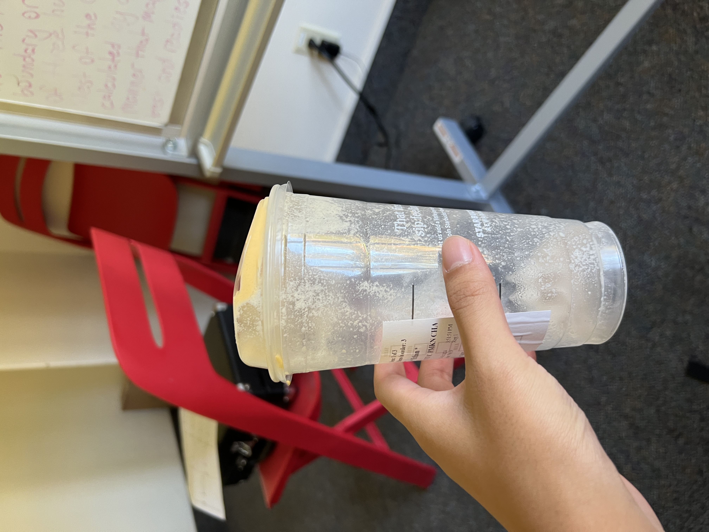

Ice Spice Starbucks (10/23/24)
Today my friends and I went to get Starbucks. We all got the Iced Pumpkin Spice Chai Lattes. It was very good. My friend also got a racoon cake pop which was cute and tasted good according to him. The latte was very good but it was very sweet. I'd give it a 8/10 but probably wont get it again because of how unhealthy it is.